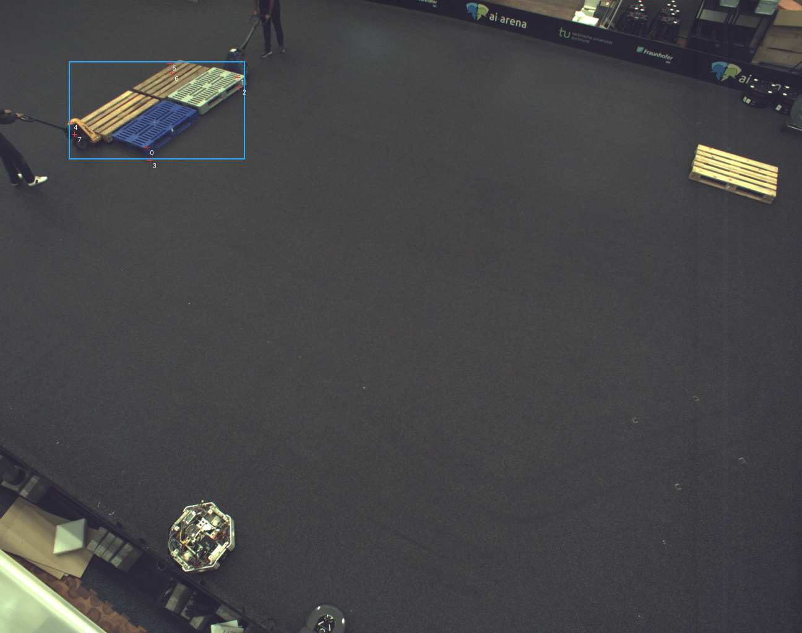
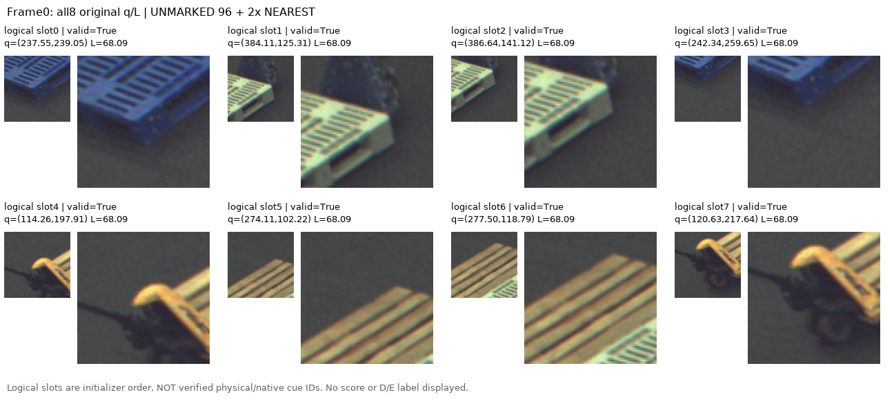
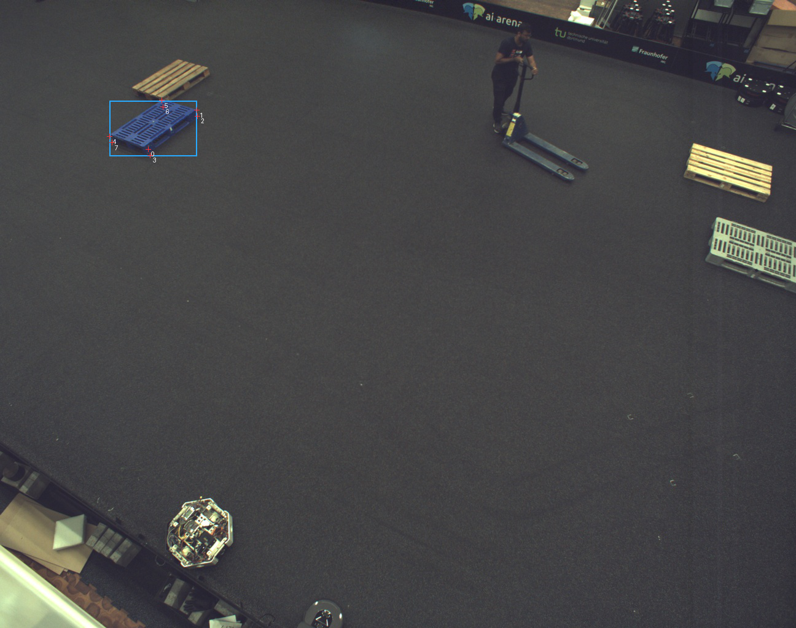
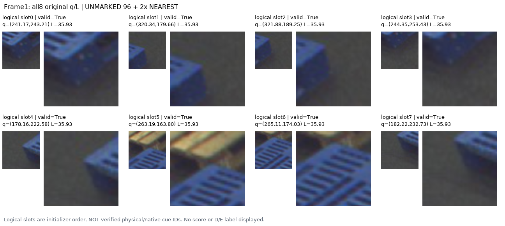
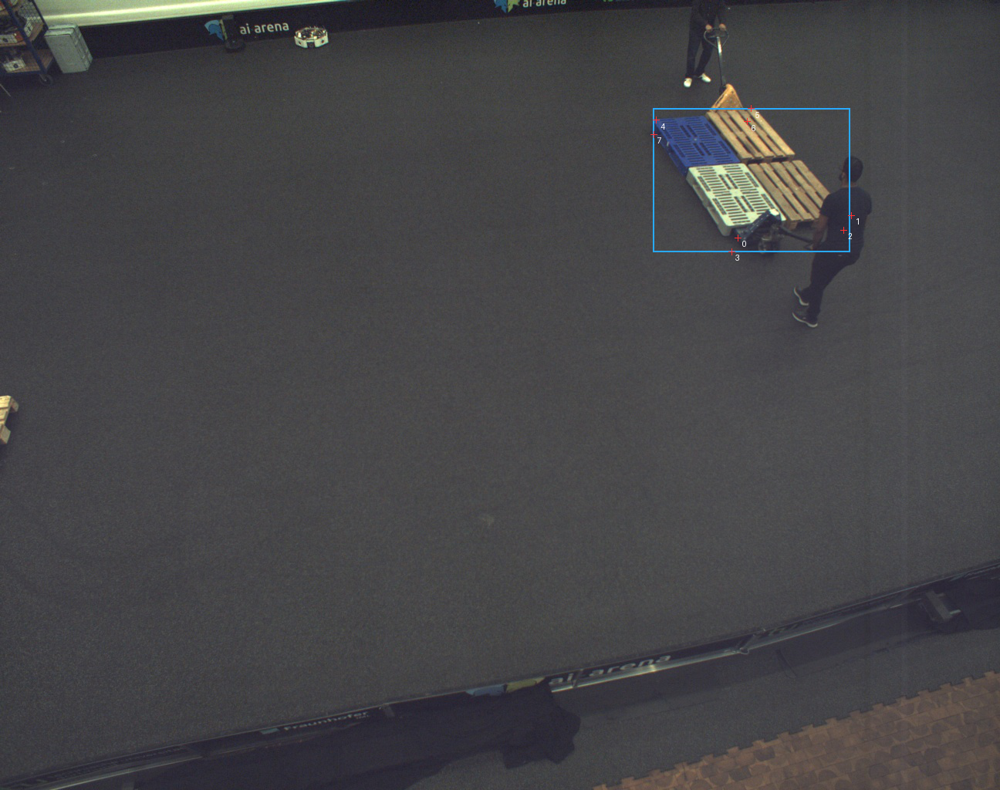
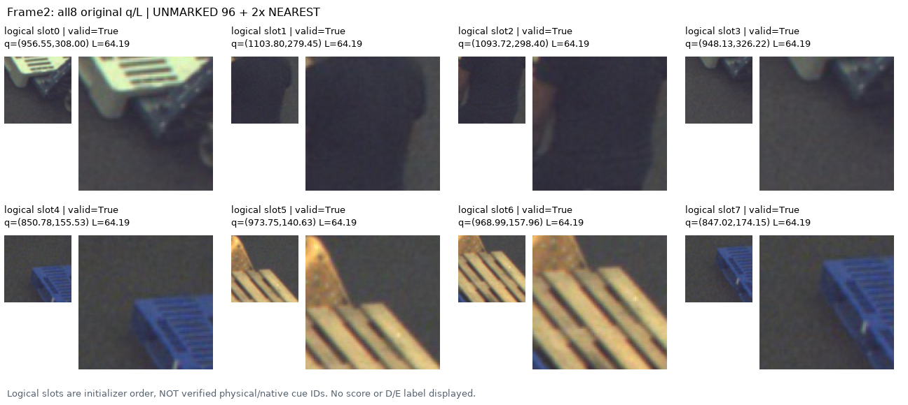
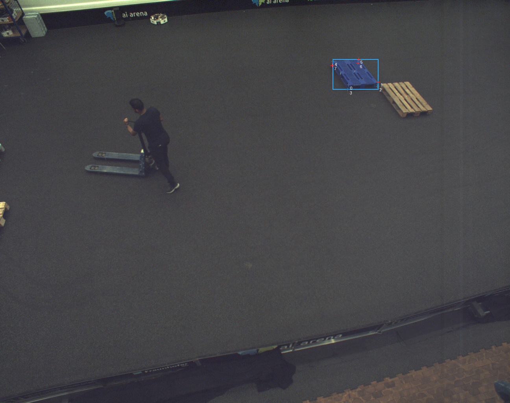
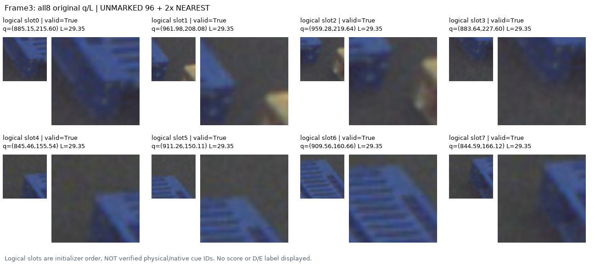

구조가 crop 안에 보이는 것과, q가 올바른 기대 cue를 가리키는 것은 다릅니다. 원래 q/L/slot을 그대로 두고4개 전체 영상과32개 unmarked crop/별도 crosshair를 모두 확인했습니다. 모델 score는 읽지 않았고 새 추론은0입니다.
Frame0/2의 선택 box는 여러 pallet을 감싸며 frame2에는 사람도 포함됩니다. Frame1/3의 파란 pallet은 더 명확히 분리되지만 경계/바닥에 놓인 q가 남습니다. 트럭·사람이 보이는 지점을 특정 cue의 외부 가림 E라고 자동 판정하지 않았습니다.
32행 실제 관찰·provenance · 2개 물리 junction 검토 후보
| 보수적인 q 주변 관찰 | 개수(D/E 성능 아님) |
|---|---|
| STRUCTURAL_JUNCTION_NEIGHBOURHOOD | 4 |
| BOUNDARY_UNCERTAIN | 8 |
| FLOOR_OR_BACKGROUND_AT_Q | 11 |
| OTHER_OBJECT_OR_SHADOW_AT_Q | 5 |
| PALLET_RIB_OR_LINE_NEIGHBOURHOOD | 4 |
Blue box는 원 selected bbox, 숫자는 initializer logical slot입니다. 물리 native corner ID가 아닙니다. 아래 crop은 unmarked96 및2× nearest 보기이며 crosshair 버전은 별도 링크입니다.


Blue box는 원 selected bbox, 숫자는 initializer logical slot입니다. 물리 native corner ID가 아닙니다. 아래 crop은 unmarked96 및2× nearest 보기이며 crosshair 버전은 별도 링크입니다.


Blue box는 원 selected bbox, 숫자는 initializer logical slot입니다. 물리 native corner ID가 아닙니다. 아래 crop은 unmarked96 및2× nearest 보기이며 crosshair 버전은 별도 링크입니다.


Blue box는 원 selected bbox, 숫자는 initializer logical slot입니다. 물리 native corner ID가 아닙니다. 아래 crop은 unmarked96 및2× nearest 보기이며 crosshair 버전은 별도 링크입니다.


Frame1의 파란 outer-rim junction2곳만 image-only 검토 후보로 적었습니다. 원래96crop의 visible contour를 직접 보고 보수적인 불확실성 범위를 기록했으며 q는 이동하지 않았습니다. 골드, native8 대응, 위치 정확도 측정, 새 학습 admission이 아닙니다. 확대는 새 영상 정보를 만들지 않습니다.
모든 원래32행 보존. 실제 의미 D/E 라벨0, human gold false, native semantics UNKNOWN. CSV bbox/pose/mask·model score를 이용한 GT snapping이나 query 재선택 없음. 실제 pixels는 root 승인된 V104 고정4 공개 원본/저장 출력만 사용했습니다. 이 A 보고서는 root의 별도 실제 관찰을 대신 주장하지 않습니다.